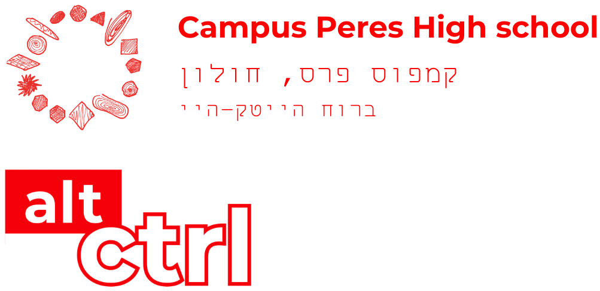

פוסט 01 — דוושות “רוכבים על ארקייד” 🚲🕹️
13.02.2026 · מכני + חיישנים
ניסינו לבנות דוושות שמרגישות כמו משהו בין אופני כושר למשחק ארקייד. היעד: לשלוט במהירות/קצב במשחק — אבל גם לגרום לשחקנים לחייך מה”אובר-דיזיין”.




במגמה אנו בוחרים לעסוק גם במשחקי מחשב פיזיים: לצד הפיתוח הדיגיטלי, התלמידים מתכננים ובונים אמצעי שליטה פיזיים — ממשקים שמתרחבים מעבר למסך ומתקיימים בעולם הממשי.
העבודה משלבת תכנון וייצור בידיים, חשיבה ארגונומית, ופיתוח חוויית משתמש גופנית וחברתית — כזו שמתייחסת לתנועה, למאמץ, לנוכחות במרחב ולמפגש בין שחקנים.
כאן נשתמש בעמוד כ”יומן מעבדה”: ניסויים, הצלחות, תקלות מצחיקות, ותיעוד של תהליך העיצוב.
ניסינו לבנות דוושות שמרגישות כמו משהו בין אופני כושר למשחק ארקייד. היעד: לשלוט במהירות/קצב במשחק — אבל גם לגרום לשחקנים לחייך מה”אובר-דיזיין”.